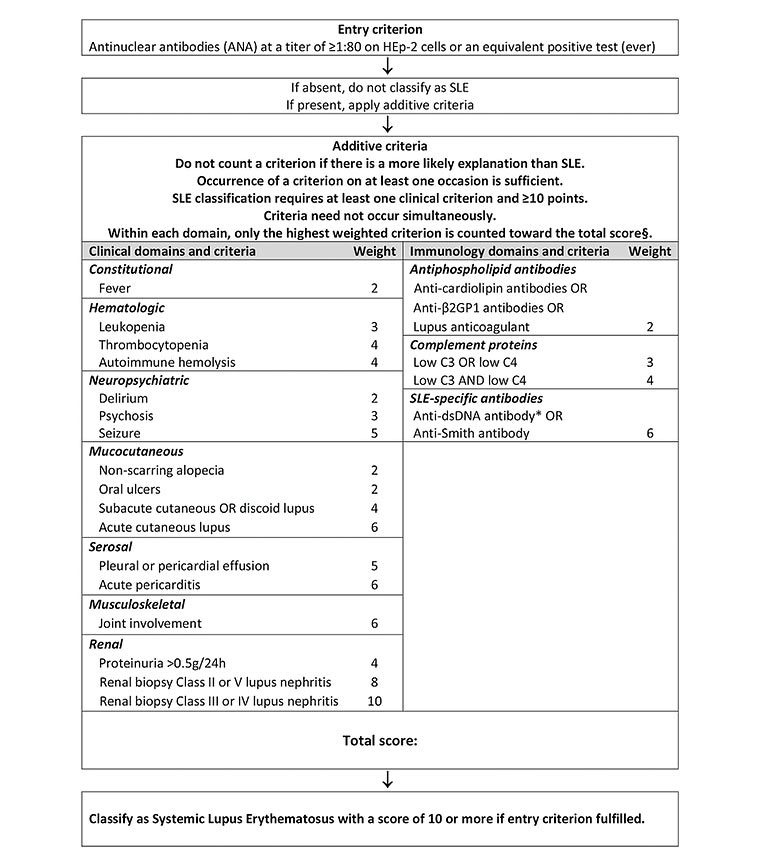

SLE
전신홍반루푸스(Systemic Lupus Erythematosus)는 유전적, 환경적 요인의 상호작용으로 세포 내 자가항원에 대한 관용에 이상이 발생하고, 그 결과 생성된 자가항체 및 면역 복합체에 의해 여러 장기와 조직이 손상당하는 대표적인 자가면역질환이다.
[분류]
1. 일반적인 분류
Lupus Erythematosus라는 용어 자체가 피부병변을 묘사한 것이기도 하고 (늑대(lupus)가 물어뜯은 형태의 붉은 반점 (erythematosus)), 약 50% 정도의 환자는 전신 증상 없이 피부에만 국한된 병변을 갖는다고 한다. 일반적으로는 'Lupus Erythematosus'에 4개의 아형이 있다고 보고 그중에 가장 중요하고 흔하고 전신증상이 두드러지는 아형을 Systemic Lupus Erythematosus, 줄여서 SLE 또는 Lupus라고 칭한다.
- Systemic Lupus Erythematosus (SLE)
- Cutaneous Lupus Erythematosus (CLE)
- Chronic Cutaneous Lupus Erythematosus (CCLE)
- Subacute Cutaneous Lupus Erythematosus (SCLE)
- Acute Cutaneous Lupus Erythematosus (ACLE)
- Intermittent Cutaneous Lupus Erythematosus (ICLE) = Lupus tumidus
- Drug-induced Lupus
- Neonatal Lupus
참고 (Lupus-nonspecific Skin dsease)
- LE-nonspecific cutaneous lesions that serve as classification criteria for SLE
- LE-nonspecific cutaneous vascular reactions
- Other LE-nonspecific cutaneous lesions
2. 질병의 진행/임상양상에 따른 분류
- Incomplete lupus
- Late-Onset Lupus
[역학 및 발병 인자]
1. 역학
| 전세계 | 국내 | |
|---|---|---|
| 성비 | 여성 > 남성 (9배) | |
| 주 발병 연령 | 16~55세 (노인 루푸스는 증상이 가벼운 경향) | |
| 유병률 | 100명/10만 명 | 26.5명/10만 명 |
| 발병률 | 4~7명/10만 명 | 2.5명/10만 명 |
| 전세계 | 국내 | |
|---|---|---|
| 성비 | 여성 > 남성 (9배) | |
| 주 발병 연령 | 16~55세 (노인 루푸스는 증상이 가벼운 경향) | |
| 유병률 | 100명/10만 명 | 26.5명/10만 명 |
| 발병률 | 4~7명/10만 명 | 2.5명/10만 명 |
2. 병인과 위험 요인
![[Pasted image 20230812184650.png]] - 유전자와 환경이 상호작용하면 비정상적인 면역 반응이 초래되는데, 이 과정에서 병원성 자가항체 및 면역복합체가 형성되고 이 면역복합체는 조직에 침작되고, 보체를 활성화시켜서, 염증을 유발하고, 시간이 지남에 따라 비가역적인 장기 손상을 일으킴.
| 요인 | 분류 | 항목 |
|---|---|---|
| 유전적 요인 | 보체유전자 | C1q, C4, C2, HLA-DR2 & DR3 |
| Fcr 수용체 이상 | ||
| 환경적 요인 | 성호르몬 | estradiol은 지속적인 면역반응 유발, 남성호르몬은 면억억제효과 |
| 감염 | Parvo B19, CMV, EBV | |
| 기타 | 자외선, Silica dust, 흡연, 약물 (hydralazine, procainamide, quinidine, INH, diltiazem, minocycline 등) | |
| 면역학적 요인 | 선천면역계이상 | TLR의 이상, cytokine 발현 증가, 보체 이상 |
| 적응면역계이상 | B cell 수 감소, 활성화 증가 / T cell 이상 |
[병태생리]
![[Pasted image 20230812184846.png]]
- SLE의 진행을 촉진하는 것은 개인의 기본 유전 프로필과 관련이 있다.
- 루푸스와 연관된 다수의 유전 변이체는 자극성 핵산을 과도하게 생산하거나 또는 자극성 핵산 제거에 장애을 일으키고, 선천적 면역 반응, 특히 I형 인터페론(IFN) 생성을 증가시키며, 적응 면역계 세포의 활성화 역치를 바꾸거나 세포 신호전달의 활성화를 유발한다.
- 대부분의 경우 자가면역의 발달을 촉진하는 환경적 요인에 감수성이 있는 면역 활성화 상태가 형성되려면 여러 유전적 위험의 변이가 필요하다. 다만 드물지만, 면역 활성화에 중요한 일부 조절자의 돌연변이만 있어도 질병을 유발할 수 있는 변화된 면역 상태가 시작될 수 있다.
- Type I 인터페론은 형질세포양 수지상 세포(pDC)의 산물이며, 세포 내 핵산 또는 손상되거나 죽어가는 세포에서 유래된 바이러스 또는 파편과 같은 외인성 유발 인자 에 의해 pDC가 활성화는 것이 루푸스의 시작이라고 할 수 있다. IFN-α가 생성되면, 이 사이토카인은 면역계 세포에 대한 수많은 효과를 매개하는데 이는 바이러스 감염에 대한 반응과 유사하다.
- 골수성 수지상 세포(cDC)의 항원 제시 능력이 증가되어 자가 반응성 T 세포를 활성화하고 B 세포의 분화를 촉진하여 병원성 항체를 생산하도록 할 수 있다.
- 활성화된 T 세포는 CD154(CD40 리간드)를 발현하고 IL-21을 생성하여 B 세포가 항체 생성 형질 세포를 생성하는 데 효과적인 도움을 제공한다.
- IFN-α는 또한 B 세포의 생존 및 분화 인자인 B 세포 활성화 인자(BAFF)의 생산을 지원한다.
- 자가항체가 생성되면 면역 복합체는 pDC 및 B 세포의 엔도솜 Toll-like receptor에 접근하여 면역 활성화를 증폭시키고 혈관 부근에 직접 침착하여 보체 활성화, 염증 및 조직 손상을 유도한다. 단핵구 및 대식세포에 의해 생성된 활성산소종(ROS) 및 전염증성 사이토카인은 조직 손상에 기여하며, IFN-α는 내피 세포를 자극하고 불량한 혈관 복구 및 경화증과 관련이 있다.
[임상증상]
- SLE의 임상 증상은 매우 다양해서, 루푸스 환자가 특정 증상을 호소할 때 '이것이 다 루푸스 때문일 수 있다'라고 접근하는 것이 유용하며, 실제로 문헌을 뒤져보면 루푸스와 연관 없는 증상을 찾기가 더 어렵다. 또한, 루푸스 임상 증상은 과거에 (환자가 놓치고 있었으나) 발생했을 수도 있고 질환이 진행함에 따라서 새롭게 나타나기도 한다. 즉, 루푸스에 관한 증상은 그 환자의 '인생사'를 놓고 고민해야 한다.
- 이와 더불어 중요한 점은, 여러 장기의 침범 양상을 보이는 (답 안 나오는) 환자들은 무작정 SLE 분류기준에 끼워서 맞추다 보면 죄다 루푸스인 것처럼 보일 수도 있으므로 처음 진단할 때는 큰 주의가 필요하다는 것이다. 아무튼 류마티스질환의 진단은 분류기준을 참고로 전문가가 임상적으로 판단해야 한다.
| System | Frequency | 증상 |
|---|---|---|
| Constitutional | 전신통증, 발열, 체중감소, 피로감, 우울감, Lymphadenopathy | |
| MusculoSkeletal | 76~100% | synovitis, 조조강직, AVN, Myositis |
| Mucosa | ~80%? | 구강, 코, 항문, 생식기 |
| Skin | ~80%? | Lupus-specific (CLE) or non-specific (혈관염 양상) |
| CV | Pericarditis, Myocarditis, Libman-Sacks endocarditis, CAD | |
| PD | Diffuse Alveolar Hemorrhage, Shrinking lung syndrome, PAH, ILD | |
| GI/Liver | 연하곤란, ascites, pancreatitis, protein-losing enteropathy, Enteritis d/t Mesenteric vasculitis, Budd-Chiari syndrome | |
| KD&URO | Lupus nephritis, (transient) obstructive nephropathy | |
| HD | Leukopenia, Lymphopenia, ACD, thrombocytopenia, TTP/HUS, AIHA, LAPs | |
| NR | ~80%? | neuro + psychiatric sx. 주로 seizure, headache 형태로 발생. Transverse myelitis |
| EYE/Ent | sicca syndrome, 공막염, 시신경염, retinal toxicity (HCQ), RVO | |
| Vascular | Mesenteric vasculitis, skin sx., etc. |
| System | 증상 |
|---|---|
| Skin | ACLE (malar rash, photosensitivity), SCLE, CCLE (discoid rash, alopecia) |
| Mucosa | 구강, 코, 항문, 생식기, 혈관염 (두드러기, 자반, 손가락궤양, 홍반성 구진) |
| NR | 2/3에서 발생. neuro + psychiatric sx. 주로 seizure, headache 형태로 발생. Transverse myelitis |
| HD | ACD, Lymphopenia, leukopenia, thrombocytopenia. 연관된 TTP/HUS, hemolytic anemia |
| CV/PD | pericarditis, myocarditis, Libman-Sacks endocarditis, CAD, Diffuse alveolar hemorrhage, shrinking lung syndrome, PAH |
| KD | Urine protein 500mg/d or dipstick 3+ or RBC casts |
| GI | 연하곤란, ascites, pancreatitis, serositis, protein-losing enteropathy |
| Liver | Budd-Chiari syndrome |
| Eye | sicca syndrome, 공막염, 시신경염, retinal toxicity (HCQ) |
- Constitutional
- 루푸스에서 가장 흔한 증상을 차지한다.
- 발열은 루푸스 때문일 수도 있고, 동반된 감염이나 다른 이유 때문일 수 있다.
- 루푸스 때문에 발생하는 발열은 최대 38°C to 40.6°C까지 나타날 수 있고, intermittent한 양상이며, 낮은 C3와 높은 질병 활성도를 가지는 경우가 많다. 일반적으로 루푸스는 flare 되더라도 CRP가 오르지 않고 오히려 낮아진다고 알려진 질환이므로, 루푸스 환자의 CRP가 3~4 이상 확인된다면 우선은 감염을 감별해야 한다.
- LAP는 주로 두경부/겨드랑이 부위에 발생하며 SLE의 다른 양상과 동반되는 경우가 많다. 감염이나 lymphoproliferative ds.를 감별하기 위해 Bx.가 필요할 수 있는데, Bx. 결과가 Kikuchi disease로 나오는 경우도 있다. 반대로, Bx.로 Kikuchi disease가 확인된 환자는 SLE나 Still's ds.와 같은 AIIRD 유무를 확인하는 것이 중요하다.
- Musculoskeletal
- Synovitis를 동반하기도 하고, 단순히 통증만 호소하기도 한다. 2019년 분류기준에는 2개 이상의 관절에 swelling을 동반한 synovitis로 명시되어 있다. 일반적으로 bone erosion은 드물다.
- Jaccoud's arthropathy: 인대/힘줄의 변화에 따른 과도한 운동성 변형
- Rhupus: RA와 SLE의 분류기준을 모두 만족하며 hand에 RA와 유사한 erosive change가 있는 경우
- AVN: SLE 자체가 risk factor이지만 스테로이드 같은 약물을 사용해서 발생하는 경우도 많다.
- Myositis-like sx.: IIM과 잘 구별이 안된다. 스테로이드/HCQ와 같은 약물이나 Thyroid ds., 다른 질환의 유무를 감별 해야 한다.
- Osteoporosis: 아무래도 스테로이드를 많이 써서...
- Mucosa
- 가장 흔하게 발생하는 부위는 구강 (~45%), 특히 혀와 볼점막, 윗 입천장에 궤양이 발생한다.
- 통증이 없는 궤양이 특징적이라고는 하나, 진행하면서 통증을 동반할 수도 있다.
- Skin
- 크게 Lupus-specific한 병변과 Lupus-nonspecific한 병변으로 나눠 볼 수 있다.
- Lupus specific
- ACLE: Malar rash, bullous lupus, TEN, Photosensitive rash
- SCLE: photosensitive, papulosquamous/psoriasiform.
- CCLE: Discoid rash, Lupus panniculitis/profundus
- ICLE*: Lupus tumidus (erythema and induration without scale and follicuular plugging)
- Lupus non-specific
- Photosensitivity
- Nonscarring alopecia
- Vascular reaction: vasculitis, Raynaud's phenomenon, Livedo reticularis, Urticaria, Periungal telangiectasia, Erythromeralgia, etc.
- CV
- effusion을 동반한 pericarditis는 비교적 흔하지만, tamponade는 드물다고 한다.
- Myositis는 Cardiac MRI/biopsy가 중요한 진단검사이다.
- Libman-Sacks (nonbacterial thrombotic) endocarditis 는 SLE에서 비교적 특이적인 병변으로, IE와 감별이 필요하다. 문헌상으로는 Libman-Sacks endocarditis가 있을 때 그 부위에서 IE가 더 흔히 발생한다고 되어 있다.
- SLE 환자들은 CAD risk가 높으므로 일반적인 예방수칙을 지켜야 한다.
- PD
- Pleuritis/pleural effusion은 흔하다.
- DAH는 high mortality를 보이는 중요한 합병증이다.
- PAH는 필히 감별해야 하는 중요한 합병증 중 하나다.
- SLE-ILD
- Shinrking lung syndrome
- GI/Liver
- GI/Liver involvement는 분류기준에는 없으나, 더러 life-threatening한 양상으로 나타나기도 한다.
- Pancreatitis는 루푸스 떄문일 수도 있고, 약물 (esp. AZA) 때문일 수도 있다. 대개는 루푸스 때문이다.
- (젊은)여성이 pancolitis를 보이는데 etiology가 명확하지 않고 적절한 항생제와 보존적인 치료에도 호전되지 않는다면 SLE와 연관된 것은 아닌지 반드시 고민해보자.
- Mesenteric vasculitis는 life-threatening한 중요 합병증이다. CT상 bowel wall thickening, target signs, dilation of intestinal segment, engorgement of mesenteric vessels 등의 양상이 보인다면 반드시 의심해야 한다.
- Protein-losing enteropathy: diarrhea+hypoalbuminemia라면 의심.
- LFT 상승이 더러 동반되지만 ds. activity와 관련 있는지는 불분명.
- Image상 hemangioma/Focal nodular hyperplasia/peliosis hepatitis 등이 동반되는 경우도 많다.
- AIH와 lupus hepatitis는 overlapping하는 요소가 많다. smooth-muscle ab.나 LKM ab.는 AIH에 좀 더 특징적인 소견이다.
- KD&URO
- 극단적으로 루푸스 관리의 궁극적 목표는 Lupus nephritis로의 진행을 막거나, 최대한 빨리 발견해서 remission을 유도하는 것이라고 볼 수 있다.
- 루푸스 환자는 반드시, 규칙적으로 U/A (spot ACR/PCR 포함)를 확인해서 24hrs urine protein > 0.5g이라면 Kidney bx.를 시행하여 Class를 확인하고, indication이 된다면 바로 induction-maintenance management를 시작해야 한다.
- 드물지만 SLE로 인해 urethritis나 hydronephrosis가 발생할 수 있다. 조기에 치료를 시작하면 대개는 reversible 하지만 치료가 늦어지면 영구적인 kidney injury가 생기기도 한다.
- HD
- Anemia가 가장 흔하다. 주로 ACD, AIHA 등이 발생하고 여기에 IDA가 더러 동반된다.
- Leukopenia, 특히 lymphopenia 양상은 흔하다. 그렇더라도 WBC < 2000은 드물다고 한다.
- Neutropenia도 자주 동반되지만, 그렇다고 (특별한 이유가 없이) G-CSF를 써서 neutropenia를 (일시적으로) 호전시키는 것이 도움이 되는지는 잘 모르겠다.
- Thrombocytopenia는 ITP 또는 TTP/HUS 양상으로 나타난다. APS 떄문일 수도 있다.
- SLE가 조절되지 않은 상태로 지속되면 HLH로 진행한다. 일반적으로 AIIRD에 의해 발생한 secondary HLH를 MAS라고 한다.
- NR (NPSLE)
- CNS, PNS, ANS, Myoneural junction 모두를 침범할 수 있는데, 주로 CNS 침범이 흔한 것 같다.
- SLE 진단 1년 이내에 발생한 주요 신경학적 증상은 NPSLE 때문일 가능성이 좀 더 높으며, 과거 NPSLE 기왕력이 있는 active disease 환자는 relapse할 가능성이 높다.
- EYE/Ent
- 안구 증상 중 가장 흔한 것은 Secondary Sjogren's syndrome과 연관된 KCS.
- Uveitis는 흔치 않고, Retinal vascular/Optic neuropathy/Scleritis 등이 호발하는 편이다.
- HCQ-induced retinal toxicity는 유의해야 할 합병증이다.
- APS에 의한 retinal vascular disease도 간혹 있다.
- SNHL는 귀에 발생하는 가장 흔한 합병증이다.
[검사소견]
1. 검사실검사
| 항목 | 주요 검사 |
|---|---|
| CBC | CBC, PBS, Anemia study (d-coombs, haptoglobin 포함) |
| Chemistry | routine + ABG/VBG |
| U/A | 24hrs urine protein/creatinine, spot urine ACR/PCR -> Urine protein 500mg/d or dipstick 3+ or RBC cast |
| Autoimmune markers | ANA 1:80, Anti-dsDNA, Anti-Sm, APS, etc. |
| Complement | C3, C4, CH50 |
| APR | ESR, CRP, Ferritin |
- Ds. activity를 반영하는 검사: Anti-dsDNA titer, C3/C4
- 호전 이후로도 dsDNA titer는 고역가로 보일 수 있다.
2. 영상검사
- SLE 진단에 특이적인 검사는 없다.
3. 조직검사
- Skin: Interface dermatitis가 dermoepidermal junction 주변에 확인되는 것이 비교적 특징적인 소견
- Kidney: Lupus nephritis의 Classification 및 Acute/chronicity 확인
추가 검사
[진단]
1. 분류기준
1997 ACR / 2012 SLICC SLE classification criteria
| 1997 Updated of the 1982 ACR revised Criteria | 2012 SLICC classification criteria | ||
| * For the ACR criteria, no distinction is made between clinical and immunologic criteria in determining whether the required number has been met. The classification is based upon 11 criteria. For the purpose of identifying patients in clinical studies, a person is said to have SLE if any 4 or more of the 11 criteria are present, serially or simultaneously, during any interval of observation. | ¶ For the SLICC criteria, criteria are cumulative and need not be presently concurrently. A patient is classified as having SLE if he or she satisfies 4 of the clinical and immunologic criteria used in the SLICC classification criteria, including at least 1 clinical criterion and 1 immunologic criterion. Δ Alternatively, according to the SLICC criteria, a patient is classified as having SLE if he or she has biopsy-proven nephritis compatible with SLE in the presence of ANAs or anti-dsDNA antibodies. |
||
| (4 of 11 criteria)* | (4 of 17 criteria, including at least 1 clinical criterion and 1 immunologic criterion;¶ OR biopsy-proven lupus nephritisΔ) |
||
| Criterion | Definition | Criterion | Definition |
| Clinical criteria | |||
| Malar rash | Fixed erythema, flat or raised, over the malar eminences, tending to spare the nasolabial folds | Acute cutaneous lupus | Lupus malar rash (do not count if malar discoid); bullous lupus; toxic epidermal necrolysis variant of SLE; maculopapular lupus rash; photosensitive lupus rash (in the absence of dermatomyositis); OR subacute cutaneous lupus (nonindurated psoriaform and/or annular polycyclic lesions that resolve without scarring, although occasionally with postinflammatory dyspigmentation or telangiectasias) |
| Photosensitivity | Skin rash as a result of unusual reaction to sunlight, by patient history or clinician observation | ||
| Discoid rash | Erythematosus raised patches with adherent keratotic scaling and follicular plugging; atrophic scarring may occur in older lesions | Chronic cutaneous lupus | Classic discoid rash; localized (above the neck); generalized (above and below the neck); hypertrophic (verrucous) lupus; lupus panniculitis (profundus); mucosal lupus; lupus erythematosus tumidus; chilblains lupus; OR discoid lupus/lichen planus overlap |
| Nonscarring alopecia | Diffuse thinning or hair fragility with visible broken hairs (in the absence of other causes, such as alopecia areata, drugs, iron deficiency, and androgenic alopecia) | ||
| Oral ulcers | Oral or nasopharyngeal ulceration, usually painless, observed by a clinician | Oral or nasal ulcers | Palate, buccal, tongue, OR nasal ulcers (in the absence of other causes, such as vasculitis, Behçet syndrome, infection [herpesvirus], inflammatory bowel disease, reactive arthritis, and acidic foods) |
| Arthritis | Nonerosive arthritis involving 2 or more peripheral joints, characterized by tenderness, swelling, or effusion | Joint disease | Synovitis involving 2 or more joints, characterized by swelling or effusion OR |
| Tenderness in 2 or more joints and at least 30 minutes of morning stiffness | |||
| Serositis | Pleuritis – Convincing history of pleuritic pain or rubbing heard by a clinician or evidence of pleural effusion OR | Serositis | Typical pleurisy for more than 1 day, pleural effusions, or pleural rub, OR |
| Pericarditis – Documented by ECG, rub, or evidence of pericardial effusion | Typical pericardial pain (pain with recumbency improved by sitting forward) for more than 1 day, pericardial effusion, pericardial rub, or pericarditis by electrocardiography in the absence of other causes, such as infection, uremia, and Dressler syndrome | ||
| Renal disorder | Persistent proteinuria greater than 500 mg/24 hours or greater than 3+ if quantitation not performed OR | Renal | Urine protein-to-creatinine ratio (or 24-hour urine protein) representing 500 mg protein/24 hours, OR |
| Cellular casts – May be red cell, hemoglobin, granular, tubular, or mixed | Red blood cell casts | ||
| Neurologic disorder | Seizures OR psychosis – In the absence of offending drugs or known metabolic derangements (uremia, ketoacidosis, or electrolyte imbalance) | Neurologic | Seizures; psychosis; mononeuritis multiplex (in the absence of other known causes, such as primary vasculitis); myelitis; peripheral or cranial neuropathy (in the absence of other known causes, such as primary vasculitis, infection, and diabetes mellitus); OR acute confusional state (in the absence of other causes, including toxic/metabolic, uremia, drugs) |
| Hematologic disorder | Hemolytic anemia – With reticulocytosis OR Leukopenia – Less than 4000/mm3 total on 2 or more occasions OR Lymphopenia – Less than 1500/mm3 on 2 or more occasions OR Thrombocytopenia – Less than 100,000/mm3 (in the absence of offending drugs) |
Hemolytic anemia | Hemolytic anemia |
| Leukopenia or lymphopenia | Leukopenia (<4000/mm3 at least once) (in the absence of other known causes, such as Felty syndrome, drugs, and portal hypertension), OR | ||
| Lymphopenia (<1000/mm3 at least once) (in the absence of other known causes, such as glucocorticoids, drugs, and infection) | |||
| Thrombocytopenia | Thrombocytopenia (<100,000/mm3) at least once in the absence of other known causes, such as drugs, portal hypertension, and thrombotic thrombocytopenic purpura | ||
| Immunologic criteria | |||
| ANA | An abnormal titer of ANA by immunofluorescence or an equivalent assay at any point in time and in the absence of drugs known to be associated with "drug-induced lupus" syndrome | ANA | ANA level above laboratory reference range |
| Immunologic disorders | Anti-DNA – Antibody to native DNA in abnormal titer OR Anti-Sm – Presence of antibody to Sm nuclear antigen OR Positive antiphospholipid antibody on: An abnormal serum level of IgG or IgM anticardiolipin antibodies OR A positive test result for lupus anticoagulant using a standard method OR A false-positive serologic test for syphilis known to be positive for at least 6 months and confirmed by Treponema pallidum immobilization or fluorescent treponemal antibody absorption test |
Anti-dsDNA | Anti-dsDNA antibody level above laboratory reference range (or >2-fold the reference range if tested by ELISA) |
| Anti-Sm | Presence of antibody to Sm nuclear antigen | ||
| Antiphospholipid | Antiphospholipid antibody positivity as determined by any of the following: Positive test result for lupus anticoagulant; false-positive test result for rapid plasma reagin; medium- or high-titer anticardiolipin antibody level (IgA, IgG, or IgM); or positive test result for anti-beta 2-glycoprotein I (IgA, IgG, or IgM) | ||
| Low complement | Low C3; low C4; OR low CH50 | ||
| Direct Coombs test | Direct Coombs test in the absence of hemolytic anemia | ||
| 1997 업데이트된 1982 ACR 개정 기준 | 2012 SLICC 분류기준 | ||
| * ACR 분류기준의 경우 필요한 수를 충족했는지 여부를 결정할 때 임상 기준과 면역학적 기준을 구분하지 않는다. 11가지 기준에 따라 분류된다. 임상 연구에서 환자를 식별할 목적으로, 관찰 기간 동안 11개 기준 중 4개 이상이 연속적으로 또는 동시에 존재할 경우 SLE가 있는 사람이라고 한다. | ¶ SLICC 분류기준의 경우 기준은 누적되며 평가하는 시점에 증상이 동시에 있을 필요는 없다. 환자는 SLICC 분류 기준에서 사용되는 임상 및 면역학적 기준 중 1개 이상의 임상 기준 및 1개의 면역학적 기준을 포함하여 4가지를 충족하는 경우 SLE가 있는 것으로 분류된다. Δ 또는, SLICC 기준에 따르면, 환자가 ANA 또는 Anti-dsDNA가 있는 상태에서 SLE에 합당한 조직검사로 확인된 신염이 있는 경우에 SLE가 있다고 분류된다. |
||
| (11개 중 4개 기준)* | (17개 중 4개 기준, 최소 1개의 임상 기준과 1개의 면역학적 기준을 포함한다;¶ 또는 조직검사로 확인된 루푸스신염Δ) | ||
| 기준 | 정의 | 기준 | 정의 |
| 임상 기준 | |||
| 빰 발진 | 고정된 홍반, 평탄하거나 융기되어있고, 뺨 부위에 걸쳐있는데, 대개 코입술주름은 침범하지 않음 | 급성 피부 루푸스 | 루푸스 뺨 발진 (do not count if malar discoid); bullous lupus; toxic epidermal necrolysis variant of SLE; maculopapular lupus rash; photosensitive lupus rash (in the absence of dermatomyositis); OR subacute cutaneous lupus (nonindurated psoriaform and/or annular polycyclic lesions that resolve without scarring, although occasionally with postinflammatory dyspigmentation or telangiectasias) |
| 광과민성 | 햇빛에 대한 비정상적인 반응의 결과로 발생한 피부발진으로, 환자의 병력이나 의사의 진찰로 확인 | ||
| 원반형 발진 |
각화된 비늘이 붙어 있고 모낭선이 막혀 있는 도드라진 홍반; 오래된 병변에서는 위축성 반흔이 발생할 수 있음 | 만성 피부 루푸스 | 전통적인 원반형 발진; 국소적 (목 위); 전신적 (목 위와 아래); hypertrophic (verrucous) lupus; lupus panniculitis (profundus); mucosal lupus; lupus erythematosus tumidus; chilblains lupus; OR discoid lupus/lichen planus overlap |
| 흉터 없는 탈모 | 머리카락이 눈에 띄게 가늘어지거나 약해짐(원형 탈모증, 약물, 철 결핍증, 안드로겐성 탈모와 같은 다른 원인이 없는 경우) | ||
| 구강 궤양 | 구강 혹은 비인두 궤양, 흔히 통증이 없으며 의사에 의해 확인 | 구강 또는 비강 궤양 |
입천장, 볼, 혀 또는 비강 궤양 (혈관염, 베쳇 증후군, 감염[헤르페스 바이러스], 염증성 장질환, 반응성 관절염 및 산성 식품 등의 다른 원인이 없는 경우) |
| 관절염 | 2개 이상의 말초 관절을 침범하는 비미란성 관절염으로 압통, 부종, 삼출액을 동반한 경우 | 관절질환 | 부종이나 삼출액을 동반한 2개 이상 관절의 활막염 또는 |
| 2개 이상 관절의 압통과 최소 30분 이상의 조조강직 | |||
| 장막염 | 흉막염 – 늑막통증의 명확한 병력 또는 의사가 청진으로 확인한 마찰음 또는 흉막삼출액의 증거 또는 | 장막염 | 1일 이상의 전형적인 흉막염, 흉막삼출 또는 흉막잡음 또는 |
| 심장막염 – 심전도, 청진된 마찰음, 또는 심낭액의 증거가 있는 경우 | 1일 이상의 전형적인 심막통증 (누울 때는 통증이 있는데 앉은자세에서 호전), 심낭액, 심낭마찰음, 또는 감염, 요독, Dressler syndrome과 같은 다른 원인이 없는 상태에서 심초음파로 확인된 심장막염 | ||
| 신장질환 | 지속적인 단백뇨 (>500mg/일 또는 정량을 하지 않았다면 3+) 또는 | 신장 | UPCR (또는 24시간 소변 단백량)이 500mg 단백/24시간 을 나타내거나, 또는 |
| 세포성 원주 – 적혈구, 혈색소, 백혈구, 또는 혼합형 원주일 수 있음 | 적혈구 원주 | ||
| 신경질환 | 발작이나 정신병 - 원인약물이나 알려진 대사이상 (요독, 케톤산증, 전해질이상)이 없이 발생 | 신경 | 발작; 정신병; 다발성단일신경염 (혈관염과 같은 다른 원인 없음); 척수염; 말초 혹은 중추성 신경증 (혈관염, 감염, 당뇨와 같은 다른 원인 없음); 또는 급성 혼동 상태 (독소/대사, 요독, 약물과 같은 다른 원인 없음) |
| 혈액질환 | 용혈빈혈 – 망상적혈구증(Reticulocytosis)이 있거나 또는 백혈구감소증 – 2회 이상 4000/mm3 미만 또는 림프구감소증 – 2회 이상 1500/mm3 미만 또는 혈소판감소증 – 100,000/mm3 미만 (원인약물 없이) |
용혈빈혈 | 용혈빈혈 |
| 백혈구감소증 or 림프구감소증 | 백혈구감소증 (최소 1회 <4000/mm3) (Felty syndrome이나, 약물, 문맥고혈압 등의 다른 원인 없이), 또는 |
||
| 림프구감소증 (최소 1회 <1000/mm3) (글루코코르티코이드, 약물, 감염 등의 다른 원인 없이) |
|||
| 혈소판감소증 | 혈소판감소증 (최소 1회 <100,000/mm3) (약물, 문맥고혈압, TTP 등의 다른 원인 없이) |
||
| 면역학적 기준 | |||
| ANA | 질환의 어느 시점에서든 면역형광법 또는 이에 상응하는 검사에 의한 ANA의 비정상적인 역가 ("약물 유발 루푸스" 증후군과 관련이 있는 것으로 알려진 약물이 없어야 함) | ANA | ANA 수치가 검사실 기준치보다 높을 떄 |
| 면역학적 질환 | Anti-DNA – 항 DNA항체의 비정상 역가 또는 Anti-Sm – Sm nuclear antigen에 대한 항체 양성 또는 항인지질항체 양성:IgG 또는 IgM anticardiolipin 항체의 비정상 수치 또는 표준화된 검사법을 사용하여 검사한 lupus anticoagulant 양성 또는 매독검사 위양성 (최소 6개월 지속되고 TPI나 FTA-ABS 검사로 확인됨) |
Anti-dsDNA | Anti-dsDNA antibody 수치가 검사실 기준치보다 높은 경우(또는 ELISA로 검사했을 때 검사 기준치의 2배를 초과하는 경우) |
| Anti-Sm | Sm nuclear antigen에 대한 항체 양성 | ||
| Antiphospholipid | 항인지질항체가 다음 중 어느 것으로든 확인될 때: lupus anticoagulant 양성; RPR 위양성; 중간 또는 고역가의 anticardiolipin antibody level (IgA, IgG, or IgM); anti-beta 2-glycoprotein I (IgA, IgG, or IgM) 양성 |
||
| 낮은 보체 | 낮은 C3; 낮은 C4; 또는 낮은 CH50 | ||
| Direct Coombs test | 용혈빈혈이 없으면서 Direct Coombs test (+) | ||
2019 ACR/EULAR SLE classification criteria

<br>
| Criteria | Definition |
|---|---|
| Antinuclear antibodies (ANA) | ANA at a titer of ≥1:80 on HEp-2 cells or an equivalent positive test at least once. Testing by immunofluorescence on HEp-2 cells or a solid phase ANA screening immunoassay with at least equivalent performance is highly recommended. ANA가 HEp-2 세포에서 ≥1:80 역가이거나, 또는 동등한 양성 검사 결과가 적어도 한 번 확인됨. HEp-2 세포에 대한 면역형광 검사 또는 최소한 동등한 성능을 가진 solid phase ANA 스크리닝 면역분석을 사용하는 것이 권장됨. |
| Fever | Temperature >38.3°C. 체온>38.3°C. |
| Leucopenia | White blood cell count <4.0 × 109/L. 백혈구수 <4.0 × 109/L. |
| Thrombocytopenia | Platelet count <100 × 109/L. 혈소판수 <100 × 109/L. |
| Autoimmune hemolysis | Evidence of hemolysis, such as reticulocytosis, low haptoglobin, elevated indirect bilirubin, elevated lactate dehydrogenase (LDH) AND positive Coombs (direct antiglobulin) test. 용혈의 증거, 예를 들어 망상적혈구증가증, 낮은 합토글로빈, 높은 간접 빌리루빈, 높은 LDH 및 양성 Coombs(직접 항글로불린) 검사 |
| Delirium | Characterized by (1) change in consciousness or level of arousal with reduced ability to focus, (2) symptom development over hours to <2 days, (3) symptom fluctuation throughout the day, (4) either (4a) acute/subacute change in cognition (eg, memory deficit or disorientation), or (4b) change in behavior, mood, or affect (eg, restlessness, reversal of sleep/wake cycle). 특징적으로 (1) 집중력이 저하된 각성 수준이나 의식의 변화, (2) 몇 시간에서 2일 미만 기간동안 증상 진행, (3) 하루 종일 증상의 변동, (4) (4a) 인지 기능(예: 기억력 결핍 또는 방향 감각 상실)의 급성/아급성 변화, 또는 (4b) 행동, 기분 또는 감정의 변화(예: 안절부절, 수면/각성 주기의 역전). |
| Psychosis | Characterized by (1) delusions and/or hallucinations without insight and (2) absence of delirium. 특징적으로 (1) 통찰이 없는 망상 및/또는 환각 및 (2) 섬망은 없음 |
| Seizure | Primary generalized seizure or partial/focal seizure. 일차성 전신 발작 또는 부분/국소 발작. |
| Nonscarring alopecia | Nonscarring alopecia observed by a clinician. 의사가 관찰(신체 검진 또는 사진 확인)한 흉터 없는 탈모. |
| Oral ulcers | Oral ulcers observed by a clinician. 의사가 관찰(신체 검진 또는 사진 확인)한 구강 궤양. |
| Subacute cutaneous or discoid lupus | Subacute cutaneous lupus erythematosus observed by a clinician: Annular or papulosquamous (psoriasiform) cutaneous eruption, usually photodistributed. 의사가 확인(신체 검진 또는 사진 확인)한 아급성 피부 홍반성 루푸스: 환형 또는 구진편평(건선형) 피부 발진, 일반적으로 광분포. |
| Discoid lupus erythematosus observed by a clinician*: Erythematous-violaceous cutaneous lesions with secondary changes of atrophic scarring, dyspigmentation, often follicular hyperkeratosis/hematological (scalp), leading to scarring alopecia on the scalp. 의사가 관찰(신체 검진 또는 사진 확인)한 원판형 홍반성 루푸스: 위축성 흉터, 색소 침착, 종종 여포성 과각화증/혈액학적(두피)의 이차적 변화를 동반한 홍반성 피부 병변으로 두피에 흉터성 탈모증을 유발. |
|
| If skin biopsy is performed, typical changes must be present. Subacute cutaneous lupus: interface vacuolar dermatitis consisting of a perivascular lymphohistiocytic infiltrate, often with dermal mucin noted. Discoid lupus: interface vacuolar dermatitis consisting of a perivascular and/or periappendageal lymphohistiocytic infiltrate. In the scalp, follicular keratin plugs may be seen. In longstanding lesions, mucin deposition and basement membrane thickening may be noted. 피부 생검을 시행했을 경우 전형적인 변화가 있어야만 한다. 아급성 피부 루푸스: Interface vacuolar dermatitis가 혈관주위 림프조직구 침윤물로 구성되어 있으며, 종종 피부 점액이 관찰됨. 원판형 루푸스: interface vacuolar dermatitis가 혈관주위 및/또는 부속기주변 림프조직구 침윤으로 구성. 두피에서 모낭 케라틴 플러그가 보일 수 있다. 오래 지속되는 병변에서는 점액 침착과 기저막이 두꺼워지는 현상이 나타날 수 있다. |
|
| Acute cutaneous lupus | Malar rash or generalized maculopapular rash observed by a clinician. 의사가 관찰(신체 검진 또는 사진 확인)한 뺨 발진 또는 전신 반구진 발진. |
| If skin biopsy is performed, typical changes must be present: interface vacuolar dermatitis consisting of a perivascular lymphohistiocytic infiltrate, often with dermal mucin noted. Perivascular neutrophilic infiltrate may be present early in the course. 피부 생검을 시행했을 경우 전형적인 변화가 있어야만 한다. interface vacuolar dermatitis가 혈관주위 림프조직구 침윤으로 구성되어 있으며, 종종 진피 점액이 관찰됨. 혈관주위 호중구 침윤이 과정 초기에 나타날 수 있음. |
|
| Pleural or pericardial effusion | Imaging evidence (such as ultrasound, radiograph, CT scan, MRI) of pleural or pericardial effusion, or both. 흉막 혹은 (또는 둘 다)심낭 삼출의 영상 증거 (예를 들어 초음파, 방사선 영상, CT, MRI) |
| Acute pericarditis | ≥2 of (1) pericardial chest pain (typically sharp, worse with inspiration, improved by leaning forward), (2) pericardial rub, (3) electrocardiogram (EKG) with new widespread ST-elevation or PR depression, (4) new or worsened pericardial effusion on imaging (such as ultrasound, radiograph, CT scan, MRI). 다음 4 항목 중 2가지 이상 (1) 심낭 흉통(전형적으로 예리함, 흡기 시 악화됨, 앞으로 기울이면 개선) (2) 심낭 마찰음 (3) 새로운 광범위한 ST 상승 또는 PR 저하가 있는 심전도(EKG) (4) 새로운 또는 영상(예: 초음파, 방사선 영상, CT 스캔, MRI)에서 심낭 삼출이 악화 |
| Joint involvement | EITHER (1) synovitis involving 2 or more joints characterized by swelling or effusion OR (2) tenderness in 2 or more joints and at least 30 minutes of morning stiffness. (1) 종창 또는 삼출을 특징으로 하는 2개 이상 관절의 활막염 또는 (2) 2개 이상의 관절에 압통이 있고 적어도 30분 동안 조조강직이 있는 경우. |
| Proteinuria >0.5 g/24 hours | Proteinuria >0.5 g/24 hours by 24 hours urine or equivalent spot urine protein-to-creatinine ratio. 24시간 소변 정량에서 요단백 >0.5 g 이거나 이에 상응하는 단백 소변 단백 대 크레아티닌 (UPCR) 비율. |
| Class II or V lupus nephritis on renal biopsy according to ISN/RPS 2003 classification | Class II: mesangial proliferative lupus nephritis: purely mesangial hypercellularity of any degree or mesangial matrix expansion by light microscopy, with mesangial immune deposit. A few isolated subepithelial or subendothelial deposits may be visible by immune-fluorescence or electron microscopy, but not by light microscopy. Class II: 사구체간질 증식 루푸스신염: LM상 정도에 상관 없이 순전히 사구체간질의 과세포화(hypercellularity)가 보이거나 mesangial matrix expansion이 확인. 소수의 고립된 subepithelial or subendothelial deposits이 면역형광이나 EM에서 보일수는 있으나, LM에서는 보이지 않음. |
| Class V: membranous lupus nephritis: global or segmental subepithelial immune deposits or their morphologic sequelae by light microscopy and by immunofluorescence or electron microscopy, with or without mesangial alterations. Class V: 막성 루푸스 신염: LM 및 면역형광 또는 EM에 의한 전체적 또는 부분적 상피하 면역 침착 (subepithelial immune deposit), 사구체간질 변화를 동반할 수도 있음. |
|
| Class III or IV lupus nephritis on renal biopsy according to ISN/RPS 2003 classification | Class III: focal lupus nephritis: active or inactive focal, segmental or global endocapillary or extracapillary glomerulonephritis involving <50% of all glomeruli, typically with focal subendothelial immune deposits, with or without mesangial alterations. Class III: 국소 루푸스 신염: 전체 사구체의 50% 미만을 침범하는 활성 또는 비활성 국소, 분절성 또는 전체 모세혈관 내 또는 모세혈관 외 사구체신염으로, 일반적으로 국소 내피하 면역 침착 (subendothelial)이 있고, 간질 변화가 있을 수도 있다. |
| Class IV: diffuse lupus nephritis: active or inactive diffuse, segmental or global endocapillary or extracapillary glomerulonephritis involving ≥50% of all glomeruli, typically with diffuse subendothelial immune deposits, with or without mesangial alterations. This class includes cases with diffuse wire loop deposits but with little or no glomerular proliferation. Class IV: 미만성 루푸스 신염: 전체 사구체의 50% 이상을 침범하는 활성 또는 비활성 미만성, 분절성 또는 전체 모세혈관 내 또는 모세혈관 외 사구체신염으로, 일반적으로 미만성 내피하 면역 침착 (subendothelial)이 있다. 이 Class에는 미만성 wire loop deposit이 있지만 사구체 증식이 거의 또는 전혀 없을 수 있음. |
|
| Positive antiphospholipid antibodies | Anticardiolipin antibodies (IgA, IgG, or IgM) at medium or high titer (>40 A phospholipids [APL], GPL or MPL units, or >the 99th percentile) or positive anti-beta-2GP1 antibodies (IgA, IgG, or IgM) or positive lupus anticoagulant. 중간 또는 높은 역가의 항카디오리핀 항체(IgA, IgG 또는 IgM)(>40A 인지질[APL], GPL 또는 MPL 단위, 또는 >99번째 백분위수) 또는 양성 항-베타-2GP1 항체(IgA, IgG 또는 IgM) 또는 양성 Lupus anticoagulant. |
| Low C3 OR low C4 | C3 OR C4 below the lower limit of normal. C3 또는 C4가 정상의 하한치 아래 |
| Low C3 AND low C4 | Both C3 AND C4 below their lower limits of normal. C3와 C4 모두 정상의 하한치 아래 |
| Anti-dsDNA antibodies OR anti-Smith (Sm) antibodies |
Anti-dsDNA antibodies in an immunoassay with demonstrated ≥90% specificity for SLE against relevant disease controls OR anti-Sm antibodies. 항-dsDNA 항체 (대조군에 비해 SLE에 ≥90% 특이성이 확인된 immunoassay로 확인) 또는 항-dsDNA 항체 |
2. 감별진단
[치료]
1. 치료의 원칙
- 치료의 기본 원칙은 관해(Remission)에 도달하거나 낮은 질병활성도(Low disease Acitivty;LDA)를 유지하는 것이다. 여기서 문제는 Remission이나 LDA의 목표점을 설정하기가 쉽지 않다는 것.
- 일반적인 SLE의 Remission/LDA target은 SLEDAI와 약물 용량을 기준으로 한다.
- Lupus nephritis의 Remission/LDA target은 proteinuria의 양을 기준으로 한다.
- 기본적으로 비약물적 치료 (또는 관리)가 필수이고, 증상에 따라 약물치료를 하면서 합병증을 줄이는 것이 목표이다.
- 임신한 환자는 Anti-Ro/La를 평가하고 최소 6개월 이상 Remission이 유지된 상태이어야 한다.
2. 약물치료
3. 비약물치료
4. 치료 지침 (Recommendation)
5. 동반질환의 관리
1. 심혈관질환
- 위험인자: 고혈압, 이상지질혈증, 흡연, 질병활성도, 이환기간, 누적손상, 항인지질항체, 신질환, GC사용조기 죽상경화가 루푸스 환자 사망의 주요 원인
- 일반인에 비해 발생 위험이 5~10배 높다.
- LN환자: BP 130/80mmHg 이하, LDL≤100mg/dL 유지 권고
2. 골다공증
- 위험인자: GC사용, 자외선 차단으로 인한 Vit.D 결핍
- PRD 2.5mg/d 이상을 3개월 이상 투여할 경우 Ca+Vit.D 투여 권유
- FRAX risk 높거나 골절 위험인자가 높다면 PO BP 복용 권고
3. 악성종양
- NHL, Cervix ca., bladder ca. 발병이 유의하게 증가한다.
4. FMS
- SLE환자의 30%정도에서 FMS가 동반될 수 있다.
[Monitoring/Follow-up]
- Disease activity: SLEDAI-2K
- Damage index: SLICC/ACR-DI ![[Pasted image 20230816112027.png]] ![[Pasted image 20230816111931.png]]
[Complications]
[Outcome/Prognosis]
- 적절한 치료를 받은 SLE환자의 6~25%가 1년 이내에 관해되지만, 관해가 5년 이상 유지되는 경우는 2~7%에 불과하다.
- SLE 환자는 입원률이 높은데, 재입원하는 경우는 AIHA, Glomerular disease, pericarditis/HF가 있는 경우라고 한다.
- 1980년대 이후로 SLE환자의 5년 생존율은 90% 이상으로 증가하였으나 일반인구 대비하여 사망률이 2~5배 정도 높다.
- 사망률과 관련된 인자: LN, HTN, 남성, 젊은 나이, APS 동반, 높은 질병활성도 등